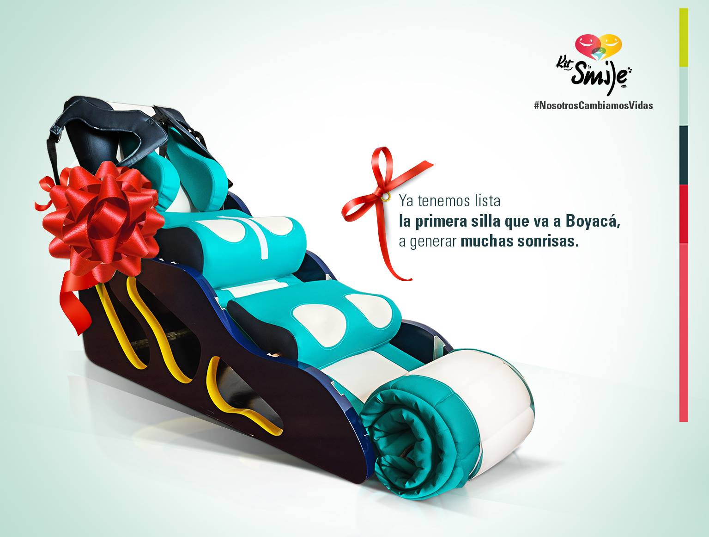

QUIÉNES SOMOS
KITSMILE, Hemos desarrollado una silla que sirve como programa de rehabilitación a los niños con parálisis cerebral en casa, permite que los padres por medio de tres posiciones estimulen al niño, en momentos como alimentación, descanso y ejercicios, aprendan y contribuyan al desarrollo del niño, a través de un producto que se adapta a ellos y desdramatiza las sillas actuales, además a muy bajo costo solucionando así los problemas de movilización, altos costos y falta de elementos que impactan a la mayor parte de la población con PCI.
